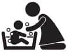

Bıcı bıcı yapalım
 Neler Bekliyor?
Neler Bekliyor?
Bebeğinizi alıp eve geldiniz. Zaten küçücük olan bebek soyunup çıplak kaldığında minik bir yaratığa benzeyecek ve bu da yetmezmiş gibi göbeğinden bir şey sarkacak. Ve birilerinin bu küçük yaratığı yıkaması gerekecek. Birileri sana göbeği düşmeden bebeği yıkamayın diyorlar, diyecek ve sen bu cümlenin arkasına sığınıp yıkama işlemini mümkün olduğunca ertelemek isteyeceksin.
Ben ne yaptım?
Tuna’yı eve getirdiğimizde ben de yıkamaktan korkmuş, göbeğinin düşmesini mi beklesek diye ısrar etmiştim. Neyse ki annem de yıkamak konusunda ısrar etti ve onun dediğini yaptık. Derin bir nefes alıp banyoya girdim, eğer bir kere becerirsem sonrakilerde hiç sıkıntı yaşamazdım, ama bir kere yapmam gerekiyordu.
Şunu araştırdım: Bazı doktorlar gerçekten de bebeğin göbeğinin düşmesini bekleyin diyorlardı. Neden? Çünkü sular yeterince temiz değil ve göbeği mikrop kapabilir. Evet, mantıklı. Peki, hazır suları kaynatıp soğutarak su hazırlarsam bu riski ortadan kaldırmış olur muyum? Evet, olursun. Tamamdır.
Hazır içme suyunu kaynatıp soğutarak bir kova su hazırladım. Bir kova, bir bebeğin yıkanması için fazla bile geliyor. Suyu geceden kaynatıp soğumaya bırakıyordum ki, ertesi gün suyu beklemek zorunda kalmayalım. Göbeği düşene kadar hazır suyu kaynatıp soğuttuk, göbeği düştükten sonra 40 günlük olana kadar çeşme suyunu kaynattık soğuttuk, 40’ından sonra ise suyu musluktan doldurduk, saltanat sona erdi.
İlk zamanlar suyun sıcaklığını ayarlayamayabilirim diye sıcaklığı termometreyle ölçüyordum, eğer ısı 37 dereceyse tamamdır. İkizler mart ayında doğdukları için hava hâlâ soğuktu. O yüzden banyo faslından önce duşu açtım ve banyonun biraz buhar olmasını bekledim. Banyo ısındığında ve suyumuz hazır olduğunda biz de hazırdık.
Bebekler ilginç bir şekilde, yıkanırken kendilerini güvende hissetmek istiyorlar. Biz çocukları yıkarken annem hep iki ellerinden tutardı, ben de rahat rahat yıkardım. Çok şükür, üçü de yıkanırken ağlamadılar. Onlar ağlamayınca insan daha rahat oluyor, ağlayınca eliniz ayağınıza dolanıyor. Eğer ilk yıkamayı başarıyla tamamlarsanız, sonra her gün banyo saatini iple çekeceksin.
Banyo havlusunun içine mermerşahi denilen ince bezlerden almıştık, o bebeği daha iyi kuruluyor ve suyu emiyor. Giydirirken bezi kaldırıyorsun, bebek havlunun içinde kalıyor, böylece daha az üşüyor. Kol altlarını, eklem yerlerini ve kulak arkalarını iyice kurulamak gerekiyor.
Eğer oda sıcaklığı elverişliyse banyo sonrası masaj yapmanda fayda var, gerçekten uykuya faydası oluyor. Bizde Mete ve Tuna masajdan yana şanslıydılar. Ama Name’ye çok fazla masaj yapma şansımız olmadı, zira bir banyo seansı bize çocuk başı 20 dakikadan bir saate patlıyordu. Amaaaaa! Bu satırları yazarken tatildeyim ve ikizler gelmediği için sadece Name’yle ilgileniyorum. Konakladığımız otel odasında bize özel bir Türk hamamı var. Name’yi her gün hamamda yıkıyorum, hamam sonrası masaj, cilt bakımı, mama ve deliksiz uyku Name’nin payına düşenler.
Çocuklar oturmaya başlayana kadar kendi plastik küvetlerinin üzerine koyduğum fileler yardımıyla yıkadım. Oturmaya başladıklarında küvetin içine konan ve altındaki vakumlar sayesinde küvette kaymadan duran, bebeğe bel desteği veren küvet oturaklarından kullandım. Çok akıllıca bir ürün. Bebek kaymıyor, yerinden kalkmıyor ve rahatça yıkıyorsun.
 Püf Noktaları
Püf Noktaları
- Bebeğin birkaç aylık olana kadar yıkama konusunda birilerinden destek iste. Bu eşin, annen, kardeşin hatta komşun dahi olabilir. Herkes bu zevkli işte senin yanında olmak isteyecektir. Anlatmadan geçemeyeceğim bir hikâye var. Büyük halam, komşularının bebeklerini yıkarmış. Mahallede bebek yıkanacağı zaman onu çağırırlarmış. Bir gün komşusu çağırmış, ama halam bir işi olduğunu, gidemeyeceğini söylemiş. Ertesi gün de komşusunu görünce, ne yaptın yıkayabildin mi diye sormuş. Yıkadım demiş kadın. Bir kova köpüklü su yaptım, önce ona sokup çıkarttım bebeği. Bir kovada köpüksüz su yaptım, sonra da onun içine sokup çıkarttım, yıkadım demiş! Yok artık, dediğini duyar gibiyim, ama gerçek.
- Bebeği eğer imkanın varsa her gün yıka. Bebekler suyla temas ettiklerinde kendilerini anne karnında hissettikleri için çok rahatlarlarmış. Ama büyüdüklerinde her gün yıkamak eziyet oluyor. Sudan çıkmak istemiyorlar, sonra da üşütüyorlar.
- Sadece bebeğin yıkanmasında kullanılacak bir kova temin et ve evde temizlik yapan senin dışında birileri varsa, bu kovayı temizlik için kullanmamasını sıkı sıkı tembihle.
- Yıkanırken ellerinden tuttuğunuzda bebekler gerçekten kendilerini güvende hissediyorlar.
- Havlunun içine kurulama için ayrı bir bez yerleştir ki suyu emsin, havlusu kuru kalsın ve bebek üşümesin.
- Göbeğini, kulak arkalarını, eklem yerlerini, kol altlarını ve parmak aralarını iyi kurula.
- Ne giydireceksen önceden karar ver ve hazırda bulundur. Kıyafetlerinin yanında bebek bezi, pişik kremi, kulak çubuğu, bebek yağını da hazır bulundurursan daha rahat edersin.
- Biraz daha büyüdüklerinde küvetin içine vakumla yapışan ve çocuğun rahat oturmasını sağlayan aparatlar var, onlardan alın. Biraz da oyuncak, oldu bitti.
 Sıkıcı Tarafı
Sıkıcı Tarafı
Suyu kaynatıp soğumasını beklemek sıkıcı, o yüzden geceden kaynatıp soğumaya bırakmak iyi oluyor ve tuhaf bir şekilde bütün banyo ıslanıyor. Sanki yıkanan küçücük bir çocuk değil de bir filmiş gibi...
 Eğlenceli Yanı
Eğlenceli Yanı
Her şeyi çok eğlenceli, ama ben en çok yıkayıp odaya getirdiğimde ve havluyu açtığımda ufaklıkları çiş yaparken yakalayınca eğleniyorum. Her şey yeniden başlıyor.